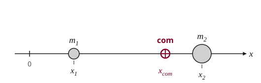

← 목차
질량 중심 (center of mass)
입자계의
질량 중심 (center of mass)
은 계의 질량이 모두 그곳에 모여 있고 외력이 모두 그곳에 작용하는 것처럼 움직이는 점이다.
(9.1.1)
입자가
개이면
이고
,
도 같은 꼴이다 (
은 전체 질량).
외력의 알짜힘이 질량 중심을 가속한다 (
, 9.2.1). 터진 불꽃 조각들의 질량 중심도 원래 포물선을 따라간다.
